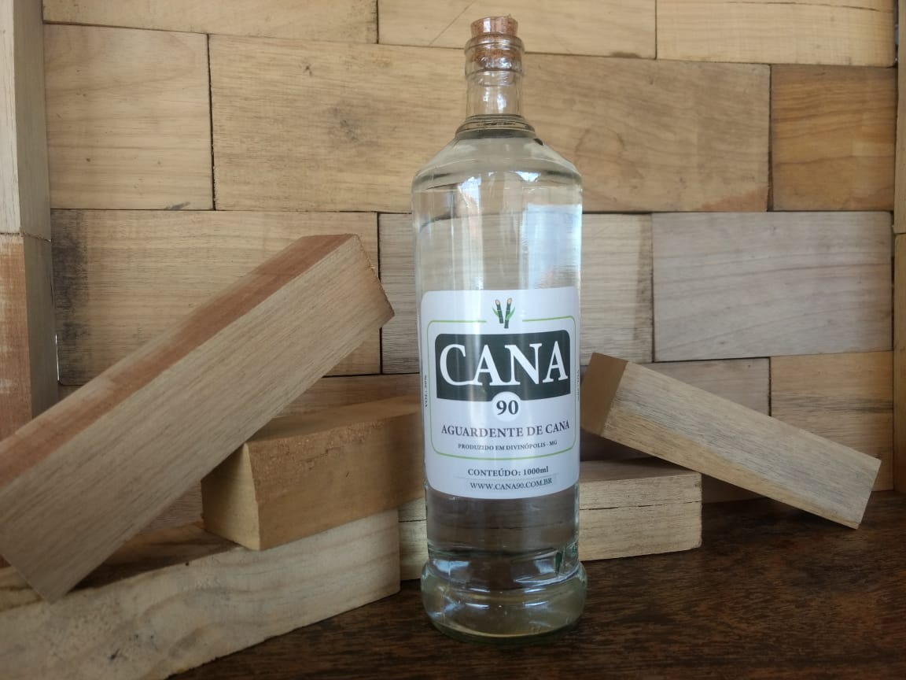
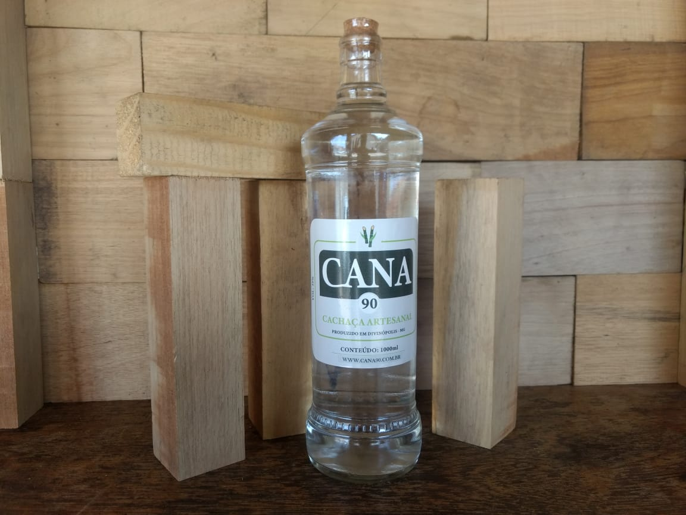
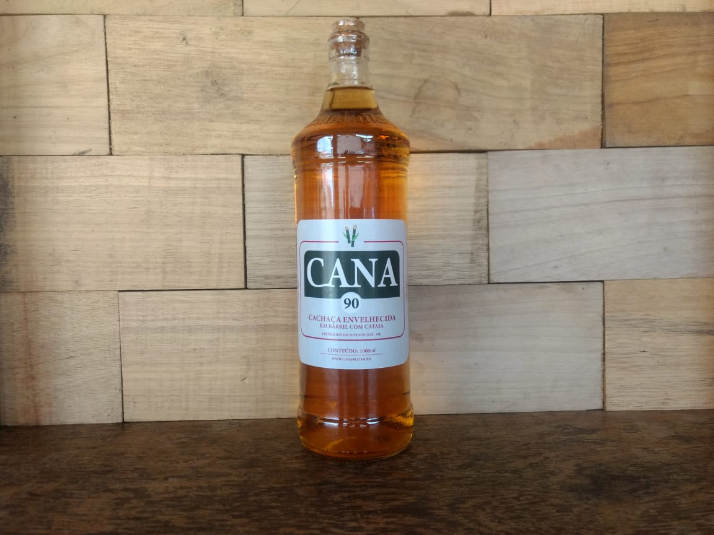

A Cana 90 hoje produz três linhas de bebidas destiladas, a Aguardente de Cana, Cachaça Artesanal, e Cachaça envelhecida com cataia.

Aguardente de Cana
A Aguardente de Cana é uma bebida destilada com graduação alcoólica de densidade alta chegando a 50° GL

Cachaça Artesanal
A Cachaça Artesanal é uma bebida mais suave, sendo ela bidestilada (destilada duas vezes) com sua graduação alcoólica chega com a densidade de 39° GL.

Cachaça envelhecida com cataia
A cachaça Envelhecida com cataia é uma bebida super fina, é um bidestilado de deixamos envelhecer com folhas de cataia, no qual deixa a bebida neutra com sabor de whisky.